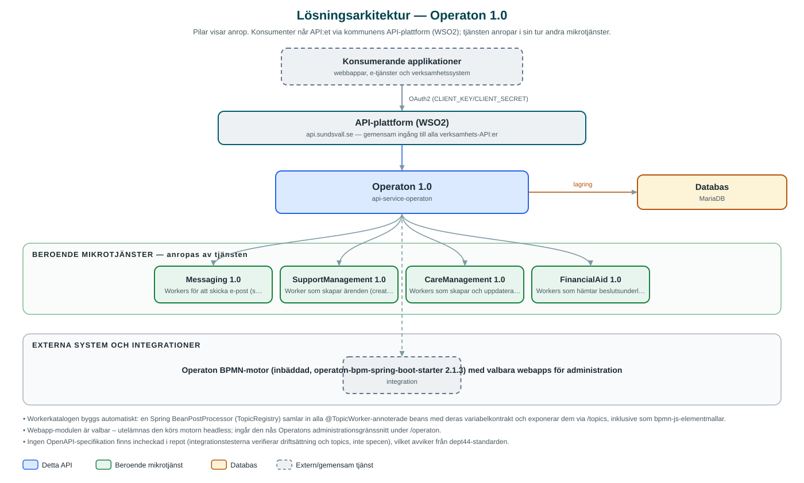

Operaton
Kommunens gemensamma BPMN-processmotor – kör verksamhetsprocesser modellerade i BPMN och DMN och erbjuder en självdokumenterande katalog av färdiga processbyggstenar som skicka e-post, skicka sms och skapa ärende.
Om API:et
Operaton ger kommunens verksamhetssystem en gemensam processmotor byggd på den öppna Operaton-motorn (en vidareutveckling av Camunda 7), inbäddad i en dept44-tjänst. Via API:et driftsätts BPMN-processer och DMN-beslutstabeller, processinstanser startas och följs, processvariabler ändras och väntande processteg återupptas genom meddelandekorrelering. DMN-beslut kan även utvärderas direkt mot inskickade variabler.
Det som gör tjänsten särskilt användbar är katalogen av externa arbetsuppgifter (external task workers). Varje worker beskriver sig själv med ämne samt in- och utvariabler, och katalogen kan hämtas både som ren dokumentation och som bpmn-js-elementmallar som laddas in i en BPMN-modellerare. Processmodellerare kan därmed dra in färdiga byggstenar som skicka e-post, skicka sms eller skapa ärende utan att känna till de bakomliggande API:erna.
Med tjänsten följer workerpaket mot Messaging (e-post och sms), SupportManagement (skapa ärende), CareManagement (ärendehantering med beslut och normberäkning för ekonomiskt bistånd, bland annat mot Lifecare) och FinancialAid (hämta beslutsunderlag och utvärdera inkomster mot regelverk). Motorns administrationsgränssnitt (webapps) ingår som valbar modul.
Det här gör API:et
- Driftsättning av processer – BPMN-processer och DMN-beslutstabeller driftsätts, listas och tas bort via API:et; cascade-borttagning avslutar även pågående instanser.
- Processinstanser – Instanser startas per processdefinitionsnyckel med valfria variabler, listas och följs; variabler kan läggas till, ändras och tas bort under körning.
- Meddelandekorrelering – BPMN-meddelanden korreleras till väntande processinstanser, till exempel när en handläggare fattar sitt beslut.
- DMN-beslut – Beslutstabeller listas, hämtas som XML och utvärderas direkt mot inskickade variabler.
- Självdokumenterande workerkatalog – Alla external task-ämnen exponeras med sina in- och utvariabelkontrakt, även som bpmn-js-elementmallar för BPMN-modellerare.
- Färdiga processbyggstenar – Workers för e-post, sms, ärendeskapande, ärendeuppdatering, beslut, normberäkning och regelverksutvärdering ingår som moduler.
API-dokumentation
Ingen incheckad OpenAPI-specifikation hittades i källkodsförrådet; se källkoden för aktuell API-dokumentation. Programvaruförteckningen (SBOM) listar tjänstens samtliga tredjepartskomponenter med version och licens.
Teknisk dokumentation
Nedan beskrivs hur tjänsten är uppbyggd, vilka andra tjänster den anropar och vad som krävs för att driftsätta den. Informationen är härledd ur källkoden och dess konfiguration på GitHub.
Arkitektur

API:et är en mikrotjänst (Java 25, Spring Boot via kommunens gemensamma tjänsteplattform dept44 (8.0.8), byggd med Maven). Konsumenter når tjänsten via kommunens gemensamma API-plattform (WSO2) på api.sundsvall.se – tjänsten anropas aldrig direkt. Tjänsten anropar i sin tur andra mikrotjänster i kommunens tjänstelandskap. Lagring: MariaDB; Operaton-motorn hanterar sina egna processtabeller och Flyway lägger till ShedLock-tabellen för schemalagda jobb. Övriga integrationer som förekommer i koden: Operaton BPMN-motor (inbäddad, operaton-bpm-spring-boot-starter 2.1.3) med valbara webapps för administration.
Teknikstack
- Språk: Java 25
- Ramverk: Spring Boot via kommunens gemensamma tjänsteplattform dept44 (8.0.8), byggd med Maven
- Databas: MariaDB; Operaton-motorn hanterar sina egna processtabeller och Flyway lägger till ShedLock-tabellen för schemalagda jobb
- Övrigt: Multimodulbygge (core, deployment, process, decision, workers samt workerpaket per verksamhetsområde), inbäddad Operaton-motor 2.1.3, dept44-scheduler med ShedLock
Beroenden till andra mikrotjänster
Tjänsten anropar följande mikrotjänster. Versionerna är hämtade ur källkodens integrationsklienter.
| Tjänst | Version | Användning |
|---|---|---|
| Messaging | 1.0 | Workers för att skicka e-post (send-email) och sms (send-sms) från BPMN-processer. |
| SupportManagement | 1.0 | Worker som skapar ärenden (create-errand) från BPMN-processer. |
| CareManagement | 1.0 | Workers som skapar och uppdaterar ärenden, registrerar beslut, hanterar normberäkning, hämtar Lifecare-komplement och kontrollerar betalstatus. |
| FinancialAid | 1.0 | Workers som hämtar beslutsunderlag för ekonomiskt bistånd och utvärderar inkomster mot regelverk. |
Programvaruförteckning
Tjänsten bygger på 331 tredjepartskomponenter fördelade på 18 olika licenser. Till skillnad från tabellen ovan, som listar andra mikrotjänster, avses här de programbibliotek som ingår i bygget. Se programvaruförteckningen för hela listan.
Konfiguration och driftsättning
- application.yml med URL och OAuth2-klientuppgifter (client_credentials) för Messaging, SupportManagement, CareManagement och FinancialAid
- Administratörskonto för motorns webapps (standard demo/demo – ska ersättas per miljö)
- Cron-uttryck för schemalagda workers (bl.a. logger-worker och hämtning av beslutsunderlag för ekonomiskt bistånd)
- MariaDB-anslutning; motorns schema hanteras av Operaton och ShedLock-tabellen av Flyway
- Anrop görs per kommun – municipalityId ingår i alla API-vägar
Noterbart ur källkoden
- Workerkatalogen byggs automatiskt: en Spring BeanPostProcessor (TopicRegistry) samlar in alla @TopicWorker-annoterade beans med deras variabelkontrakt och exponerar dem via /topics, inklusive som bpmn-js-elementmallar.
- Webapp-modulen är valbar – utelämnas den körs motorn headless; ingår den nås Operatons administrationsgränssnitt under /operaton.
- Ingen OpenAPI-specifikation finns incheckad i repot (integrationstesterna verifierar driftsättning och topics, inte specen), vilket avviker från dept44-standarden.
- Klientkontrakten mot beroende tjänster är egna, minimala specifikationer med version 1.0 – de speglar inte de fullständiga API:ernas versionsnummer.
- Workerpaketet för CareManagement innehåller processtöd för ekonomiskt bistånd med normberäkning i flera steg (skapa, förbereda, fastställa) samt hämtning av komplement från Lifecare.
Källkod
Källkoden är öppen och finns hos Sundsvalls kommun på GitHub. I källkodsförrådet finns även instruktioner för att klona, konfigurera och starta tjänsten i egen miljö.